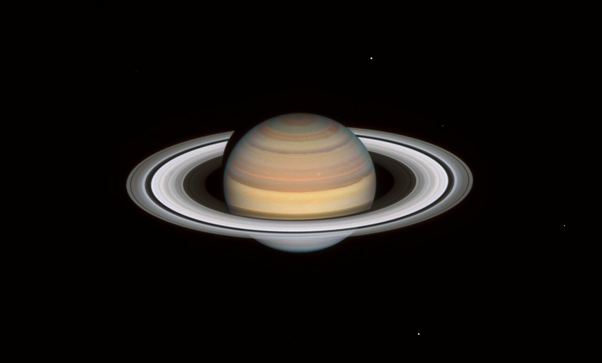
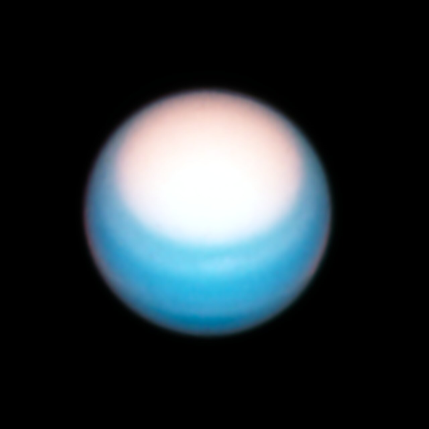
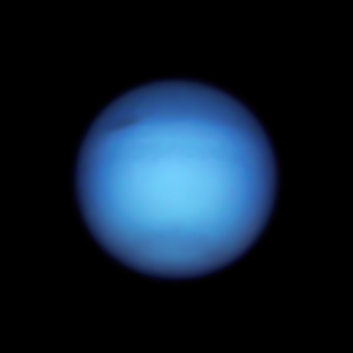

Космический телескоп «Hubble» завершил свое ежегодное грандиозное «путешествие» по внешним областям Солнечной системы, получив четкие изображения планет-гигантов – Юпитера, Сатурна, Урана и Нептуна. В отличие от каменистых миров земной группы, которые купаются в солнечном свете, эти четыре далеких странника в основном состоят из холодных газовых смесей водорода, гелия, аммиака, метана и слоя воды, находящегося глубоко под оболочкой и окружающего раскаленное компактное ядро. «За последние полвека космические аппараты, посещавшие эти огромные планеты, предоставили немало снимков, однако их кружащиеся красочные атмосферы постоянно меняются. Поэтому «Hubble» часто обращает свой взор на гигантов с целью раскрыть новые сюрпризы и предлагая обновленный взгляд на их дикую погоду, движимую до сих пор в значительной степени неизвестными динамическими силами, действующими под верхними слоями облаков», – говорится в пресс-релизе на сайте космического телескопа.
Юпитер
На снимках Юпитера, полученных «Hubble» в 2021 году, отслеживается постоянно меняющийся ландшафт его турбулентной атмосферы, где отмечается появление несколько новых штормов, а также очередное изменение цвета экватора планеты.

Данные показывают, что экваториальная зона Юпитера оставалась темно-оранжевого цвета гораздо дольше по сравнению с предыдущими эпизодами затемнения, хотя ожидалось ее более быстрое осветление. Чуть выше экватора исследователи отмечают появление нескольких новых штормов. В то время как некоторые из них четко очерчены и ясны, другие расплывчатые и туманные. Эта разница во внешнем виде, вероятно, вызвана физическими свойствами облаков вихрей.
Сатурн
Снимки Сатурна раскрыли быстрые и резкие изменения цвета полос в северном полушарии планеты, где сейчас ранняя осень. Эти структуры также менялись в ходе годичных наблюдений «Hubble» как в 2019 году, так и в 2020 году.
Примечательно, что культовый шестиугольный шторм Сатурна, впервые обнаруженный в 1981 году космическим аппаратом NASA «Voyager 2», был трудно различим на снимках 2020 года, но снова стал отчетливо виден на новых.
Уран
Портрет Урана выделяется яркой северной полярной шапкой. В северном полушарии весна, и увеличение ультрафиолетового излучения Солнца, похоже, заставляет полярный регион светлеть. Это может быть связано либо с изменением прозрачности метановой дымки, либо с аэрозольными частицами.
Любопытно, что даже когда атмосферный «колпак» становится ярче, резкая южная граница остается на той же широте. Это явление постоянно на протяжении уже нескольких лет. Возможно, какой-то реактивный поток создает преграду на 43 градусе широты.
Нептун
Наблюдения Нептуна показали, что темное пятно диаметром более 7 тысяч километров, которое, как недавно было обнаружено, изменило курс движения от экватора на север, все еще присутствует в атмосфере. Также на снимках исследователи отмечают темный продолговатый круг, охватывающий южный полюс планеты.
